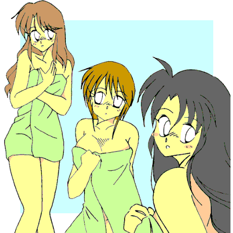
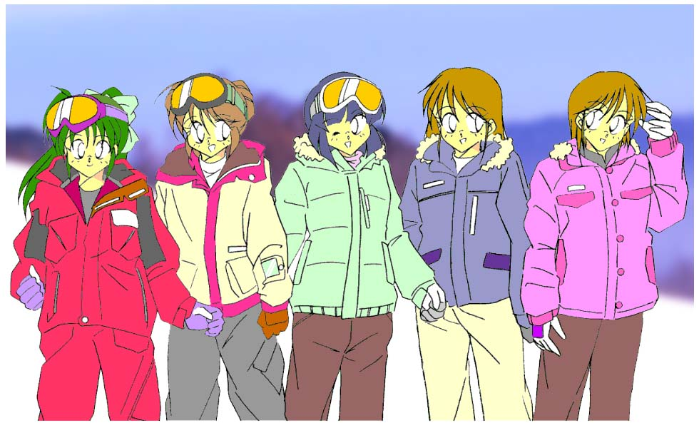

んぅ〜ん〜ぅんんんん、んぅ〜ぅんん〜っ♪ んん〜ぅ、んんんんっんぅ〜んぅ〜っ♪（←さ○まさしのハミング）
んぅ〜ん〜ぅんんんんんぅ〜ぅんん〜っん、んぅ〜ぅんんっんぅ〜んん〜っ♪（←だからさだ○さしのハミングなんだってば）
「隊長ぉおおおおおっ、秘湯の温泉旅館というのはっ、いつ到着するのでありますかああああっ」
「…………」
白塁学園高校元祖ロボＴＲＹ部——女美川軍団は今、大雪原の真っ只中にいるわけで……
「『バスを降りて五分』じゃなかったのでありますかああああっ」
「…………」
もう、かれこれ二時間近くも雪の中を彷徨（さまよ）っているわけで……
「ところで今、我々はどっち向いて歩いているのでありますかあああっ」
「…………」
前を向いても後ろを見ても、一面真っ白なわけで……
「……たっ、たいちょおおおおおっ」
「ええ〜いっ四の五の言うでないであああ〜るっ！！ こうなった以上、男らしく腹を括るのであああ〜るっ！！ ……とい〜うわけでっ、たった今から我々白塁学園高校元祖ロボＴＲＹ部は〜っ、怒濤の雪中行軍訓練を〜っ、急〜遽実施するのであああ〜るっ！！」
「「いっ・・・いえっ、さーっ！！」」
モスグリーンのランニングに迷彩柄のアーミーパンツといういつもの格好で、寒くないのか——といった疑問はスルーされるわけで……
「女美川軍団っ、ごぉあへえええええっどっ！！」「「ガンホーっ！！ ガンホーっ！！」」
「近道しようとしたら迷ってしまった」
なんて、口が裂けても言えなかったわけで……（笑）
—— 萌え燃えっ！ 白塁学園高校女子ロボＴＲＹ部 ＥＸ−Ｓ 「さおりんとりびゅーと」０２
——
私たちをスキーに連れてって♪
・・・くれたらたぶん、すんごいことになるんじゃないかと（笑）。
ＣＲＥＡＴＥＤ ＢＹ ＭＯＮＤＯ
（special thanks よっすぃーさん＆南文堂さん）
季節は冬、スキーシーズン真っ只中。
甲介……いや、今は体内のナノマシンの作用で女の子に変身しているから、沙織——は、ほのかに誘われて二泊三日のスキー旅行に来ていた。
二人は今、リフト券売り場の行列にならんでいる。
「それにしても、すごい混雑ねえ……」「ああ……じゃなくて、う、うん」
ここ蔵灘（ぐらなだ）温泉スノーパークは、沙織（甲介）たちの住む甘水（あます）市から車で四時間ほどの山間（やまあい）に位置する、知る人ぞ知る穴場のスキー場である。だが、シーズン当初の雪不足のせいもあってか、ほのかが今つぶやいたように、よそのスキー場から大勢のスキーヤーたちがこちらに流れ込んできていた。
とりあえず一昨日から昨日にかけて久しぶりにまとまった雪が降ったので、ゲレンデのコンディションは良さそうなのだが。
「でも、なんで、こ、甲介……くんを、誘わなかった、の？」
「あ〜ダメダメ。あいつ、ちょっとうまく滑れるからって、すぐに上の方へ引っぱって行こうとするんだもんっ。それも、『スキーは転んでうまくなるもんだ〜』とか言って無理矢理よっ」
「……んなことしたっけか？」
思わずきき返した沙織に、ほのかは首をかしげた。「……なんで沙織ちゃんが知ってるの？」
「！！ あ、い、いやその、ま……前に聞いたような聞かなかったような…………あ、す、すいませ〜ん、二日券二枚くださ〜い」
「…………」
沙織はあわてて言い繕い、タイミングよく順番が来たので誤魔化すように窓口へ向き直った。ほのかはさらに怪訝な顔つきになるが、沙織が時々怪しいのは毎度のこと（笑）なので、それ以上深く追求する気もないようだ。
「飯綱甲介＝文月沙織」を知る者は、甲介の母親と、かのお師匠……そしてごくごく限られた一部の人間だけである。
当然、目の前にいるほのかはそのことを全く知らないし、沙織（甲介）も教えるつもりはない（笑）。
「ところで沙織ちゃんは、どれくらい滑れるの？ 見たところウェアもおニューみたいだし」
「え〜っと、まあ……そこそこ、かな」
そう答えると、沙織は肩と腰をひねって自分の格好を見直した。
合わせ目と裾に赤いストライプが入った薄いベージュのジャケットと、ダークグレーのスノーパンツ。まさかこの（女の子の）姿でスキーするとは思ってもいなかったので、あわてて道具＆ウェア一式を買い揃えたのである。
ちなみに沙織……いや甲介は、ＳＡＪ（日本スキー連盟）の技能検定三級のバッジテストに合格している。本人曰く、「もう少しで二級も合格できる」のだそうだが、さすがにその敷居は高いようだ。
一方ほのかは、今のところプルーク（ハの字）滑りがせいぜいだ。
今回は甲介の知らないところでひそかに練習してうまくなって、その鼻をあかしてやろうという魂胆がある（……でも、ひとりだと面白くないので、沙織に声をかけて連れてきた）らしいのだが。
「板と靴、レンタルすれば安くすんだのに……」
「そ……そう、だね」
看板（ゲレンデマップ）のそばに立ててあったスキー板を履き、二人はリフト乗り場へと移動する。
——だってレディスとはいえ、最新モデル欲しかったし……
その結果、母親への借金が増えたことはいうまでもない。もちろん、「娘」としてお店（ブティック）の手伝い（マヌカン役を含む）もする——という条件は、きっちりのまされている（笑）。
それはさておき、列にならんで待つこと数分……やっとリフトの順番が来た。
だが、しかし—— 「……うわわわっ！？」
突然沙織は後ろにバランスを崩し、停止線の手前で尻餅をついてしまう。
ごんっ！
リフトの座席の縁が、その後頭部を直撃して止まった。
「…………（涙）」
——うううっ、これじゃまるで、やったこともないのに道具だけ揃えてその気になってる奴みたいじゃないか〜っ。
結局、降りる時も失敗してリフトをまた止めてしまった沙織は、その顔に憮然とした表情を浮かべてゲレンデにたどりついた。
ここら辺はある程度の傾斜がついており、ところどころにコブ（雪が盛り上がった箇所）なんかもできていたりする。
「沙織ちゃん、ほんとにスキーやったことあるの？」
「も、もちろんっ、こう見えても…………あ？ あ、あれ？ ……あ、あ、あ…………あ〜っ！！」
後ろから声をかけてきたほのかに返事しようとして身体をねじった沙織だったが、その拍子に履いていたスキーが勝手に走り出し、あっという間にゲレンデを斜めに滑り落ちていく。
「さっ、沙織ちゃんっ！？」
「うわうわうわっ、なんでぇ〜っ！？」
あわてて体勢を立て直そうとするが、沙織のスキーはスピードに乗ったまま大きく弧を描き、そのままゲレンデ端の雪溜まりの中へ突っ込んでしまった。
たまたまそれを近くで見ていた、Ｍ．Ｄ氏（大阪府在住・アマチュア作家）の目撃談——
「……ええ、まるで二時間サスペンスドラマの、崖から落ちていくできの悪い人形みたいな滑落ぶりでした（笑）。おそらくは初心者でしょうが、いきなりあんな急な斜面を滑ろうなんて無茶だな〜っと、呆れ返って……もとい、感心して見ていました、はい」
「……ぶっ、ぶべべっ！！」
「沙織ちゃん、だ、大丈夫……？」
おもいっきり転倒して雪まみれになった沙織の元に、ほのかがボーゲンでずりずりと滑り降りてきた。
「……そ、そんなはずは…………こ、こんな程度の斜面でコケるなんて……っ」
信じられない——というより、むしろ腹立たしげにそうつぶやくと、沙織はほのかが伸ばした手につかまり、身を起こした。
右足が妙に軽い。視線を落とすと、スキー板がはずれていた。
どうやら転倒したはずみで、ビンディング（スキー靴を板に固定する器具）が開放されたらしい。
……って、
「…………だあああああっ！！ お、お、お、おニューの板があああああっ！！」
沙織はあわててそこらじゅうをストックで突き刺し回し、そして身をかがめると、ジェットモグラも真っ青な勢いで雪をかき分け出した。
はずれて雪の中に埋もれてしまったスキー板は、下手をするとちょっとやそっとでは見つけることができなくなるのだ……
普通に滑れば二、三分で降りてこられるところを、沙織とほのかはその十倍近い時間をかけ、ほうほうの態で下までたどりついた。
「なんだ、沙織ちゃんもあたしと同じくらいのレベルじゃない♪」
「…………」
ほのかに笑顔でそう言われ、沙織（甲介）の胸中に忸怩（じくじ）たる思いが広がっていく。
あれからまわりの人たちも手伝ってくれて、足からはずれたスキー板を見つけることができたのだが、その後何度も転倒を繰り返し、スピードはコントロールできないは腰はどんどん後ろに引けていくわ……で、とうとうプルークの姿勢のまま、ゆっくりゆっくり滑り降りてきたのである。
——くっ、くっそおおっ……沙織の姿だと、こうまでスキー技能が低下してしまうのか〜？
とは思うものの、さすがに今ここで元の（甲介の）姿に戻るわけにもいかない。
「でもやっぱり我流じゃうまくならないのかしら？ ちゃんとスクールに入った方がいいのかな？」
「え〜っ！？」
ほのかの提案に、沙織は思いっきり難色を示した。余分なお金は使いたくないし、技能検定三級の自分がなんで……という気持ちもある。
……と、その時、沙織の背後で誰かが滑って転んだ気配がした。
「あ、大丈夫…………えっ？ み、美奈子……ちゃん？」
「はい？」
振り向いた沙織にそう呼ばれた少女——赤いスキーウェアを着て、長い髪をポニーテールに結った沙織と同じくらいの年格好の彼女は、尻餅をついた姿勢のまま、きょとんとした表情を浮かべて沙織の顔を見返した。「……え、え〜っと、あの……どちら様、でしたっけ？」
「あ……？」
——し、しまったあああああっ！！ 沙織の姿じゃ会ったことないんだったああっ！！
「知り合いなの？ 沙織ちゃん」「あ、そ、その、え、え〜っと……」
どうやって誤魔化そうかと焦る沙織。……どうやら「甲介」の時の知人に、間違って声をかけてしまったようだ。
「あら？ じゃあ、もしかしてあなたがあの沙織ちゃん？」
少女の横に立つ、スキー板を肩にかついだ三十歳くらいの女性がそう呼びかけてきた。
「えっ？ 母さ……じゃなかった、琉璃香（るりか）さん、この娘（こ）知ってるの？」
「美奈子ちゃんも名前は聞いているはずよ。ほらっ、飯綱甲介くんの従姉妹の沙織ちゃん。……初めまして、あたしは美奈子の叔母の皆瀬（みなせ）琉璃香。あなたのことはお母さまからいろいろと聞いているわよ、沙織ちゃん」
「は……はあ、ど、どうも……」
端々に意味深な言霊（笑）を含ませて自己紹介する妙齢の女性——琉璃香さんに、沙織は思わず口元を引きつらせた。
そしてポニーテールの少女はゆっくりと立ち上がると、腰についた雪を払って軽くお辞儀をした。
「改めて初めまして。し、白瀬美奈子（しらせ・みなこ）……です」
白瀬美奈子、またの名を魔法少女ラスカル☆ミーナ——
元々は皆瀬和久（みなせ・かずひさ）という、母親が若い頃暗黒魔法少女として業界（？）に名を馳せていたということ以外、特にこれといって特徴のない平々凡々な男子中学生だったのだが、諸般の事情でその身を女性化され、二代目暗黒魔法少女を襲名させられた——という、笑っていいのか悪いのかなんともコメントのしようがない運命の濁流にさいなまれる少年……もとい、美少女だったりする。
ちなみに今彼女の横にいる琉璃香さんこそが、くだんの母親にして諸悪の根源（笑）であり、美奈子は皆瀬家に下宿している遠縁の親戚ということになっている。くわしくは、南文堂さん作・「魔法少女 ラスカル☆ミーナ」を読むべし。
「…………じ、じゃあ、美奈子ちゃんって、スキー初めてな、の？」
「え……ええ、だから、か——琉璃香さんの知り合いの、スキーの上手な人に、お、教えてもらうことに、なってるん……です」
何故か互いにもじもじし合う、沙織と美奈子。
端からだと、二人とも初対面の相手にちょっと恥ずかしがっているように見えるのだが……実は——
——ううう、琉璃香さんには正体モロバレみたいだし…………ちゃんと女の子らしくしないと、美奈子ちゃんにまで気づかれるかも……
——沙織ちゃんってちょっと可愛い…………う、いかんいかん、和久の……男の視線でじろじろ見たら、変に思われるかも……
……などと、お互いそれとは気づかず同じようなことを胸のうちで思っていたりする（笑）。
「あらあら二人とも、もうすっかり仲良しさんね♪」
にまっとイタズラっぽい笑顔を浮かべて、琉璃香さんが沙織たちに声をかけてきた。
「沙織ちゃん、琉璃香さんが、あたしたちも美奈子ちゃんと一緒にスキー教えてもらったらって」
「えっ？ で……でも——」
突然の提案に、沙織はほのかと琉璃香さんの顔を交互に見た。
「大丈夫、あたしがちゃんと頼んであげるから。……もっともあなたたちだったら、その必要ないかもしれないけどね」
「「？」」
琉璃香さんのそのひと言に、沙織と、そしてほのかも顔を見合せ小首をかしげる。
と、そこへ——
「「わあああああ〜っ！！ どいてどいてぇ〜っ！！！！」」
……突然、別のスキーヤーが二人、絶叫とともに彼女たちへと突っ込んできた。どうやらゲレンデの上の方から、一直線に滑り落ちてきたらしい。
「「「きゃあああああっ！！」」」
思わず甲高い悲鳴を上げる、沙織、ほのか、そして美奈子。
その声にバランスを崩したのか、二人のスキーヤーは彼女たちの目前で、盛大な雪煙をまき散らしてでんぐり返った。
「……！！ わわわっ！ ご——ごめんっ！！」「い——いえっ！ こ、こっちこそ……」
抱き合った格好になっていた沙織と美奈子は、顔を真っ赤にしてあわてて身を離す。一方ほのかは、突っ込んできた無謀なスキーヤーたちに詰め寄り、早口で怒鳴りつけた。
「ちょっとあんたたち何考えてるのよっあぶないじゃないっ…………って、あ、あんた、テンコじゃない！？」
「えっ？」
ほのかにそう呼ばれたスキーヤーのひとりは、鼻に雪をのせたまま、きょとんとした表情を浮かべて彼女の顔を見返した。
ピンクのウェアに身を包んだ、目鼻だちのはっきりした高校生くらいの女の子だった。
「ちょっと愛美ぃっ！ あんたスノボできるって言ってたくせに全然じゃないっ！！」
言っておくが、スキーとスノーボードは身体の使い方が全く別物である。どちらかができるからって、すぐに両方ともできるものではない。
ウェアについた雪をはたきながら起き上がったもうひとりの顔は……先ほどの少女と全く同じであった。
「げげっ！ て、テンコが分裂したぁ！？」
「こら〜っ、人をアメーバみたく……って、あらやだっ、あんた、もしかしてほのかっち？」
どうやらこちらは、ほのかの知り合いだったようだ（……笑）。
「え、え〜っと……」
「ああ、沙織ちゃんは初めてか。……紹介するわ。去年の予備校の夏季講習で知り合った、伊達典子（だて・のりこ）ちゃん。……久しぶりよね。元気してた？」
「まあね。……じゃあ、この子が前にメールで教えてくれた沙織ちゃん？」
「よ……よろしく」
なんなんだこの強引な展開は——と、沙織は口元をかすかに引きつらせながらも笑みを返した。
「それはそうとテンコ、あんたなんでいきなり二人に増殖してるのよ？」
「だから人を単細胞生物みたいに言うなっ。こっちはあたしの双子の妹の、愛美よっ」
「え〜っ？ あんた双子だったの？ 今までそんなことひと言も聞いてなかったわよ」
「そりゃそうよ。だって半年前からだもん」
「ふ〜ん、そうなの…………って、……は？」
「…………」
微妙にずれた受け答えをする相方（？）に呆れたようなため息をつくと、「愛美」と呼ばれたもうひとりの少女は沙織たちに向き直った。
「え、え〜っと、だ、伊達愛美（だて・まなみ）です。……よろしく」
伊達愛美、またの名を学園戦士・レッドブルマー——
元々は霧島五郎（きりしま・ごろう）という、名前が水をエネルギー源にする某巨大ヒーローと同姓同名だということ以外、特にこれといって特徴のない平々凡々な男子高校生だったのだが、諸般の事情でその身を女性化され、体操服ブルマー姿のスーパーヒロインを押しつけられた——という、同情していいのか悪いのかなんともコメントのしようがない運命の濁流にさいなまれる少年……もとい、美少女だったりする。
ちなみに今彼女の横にいる伊達典子がスーパーヒロイン役を固辞し、その身代わりとして彼女そっくりに変身させられたため、双子の妹ということにされてひとつ屋根の下で同居している。くわしくは、よっすぃーさん作・「学園戦士・レッドブルマー」を読むべし。
かくして、愛美＆典子も加わってスキーの講習を受けることになった一同であるが……
「んふふふふ……沙織ちゃんってば可愛い〜っ♪ むにむにむに〜っ」
「ひゃ、ひゃめれええ〜っ！！」
新しいオモチャを与えられた子どものような顔をして沙織に速攻で抱きつき、その両頬をつまんでむにむにする典子。
もしかすると、双子の「妹」と同じ “匂い”
を沙織から無意識のうちに嗅ぎ取ったのかもしれない（？）。
「と、止めなくていいんですか？ ほのかさん、愛美さん」
矛先が自分に向けられる危険性（笑）があるにもかかわらず、根がまじめな美奈子はあわてて二人に声をかけた。
「しょうがないわね〜っ。テンコっ！ あんまり沙織ちゃんをいじめないのっ！」
……と言うものの、ほのかの目は微妙に笑っている。愛美にいたっては、「止めてもムダ」とばかりにため息をつく始末。
「ほらっ、降りてきたわ。あの人よ」
琉璃香さんが斜面を指さし、じゃれ合って（？）いた沙織たちは、つられるようにその方向を見やった。
ゲレンデの上の方から、紺色のスキーウェアに身を包んだ長身のスキーヤーが一人、滑り降りてくる。
どうやらあれが琉璃香さんの知り合いで、今回のインストラクター役の人らしい。
安定感のあるフォームで、かなりのスピードが出ているにも関わらず上体が全くぶれていない。
軽快なストックワーク。足元を覆い隠すように舞い散る雪煙も、ダイナミックなその滑りを引き立てている。
コブ斜面を鮮やかなスキーコントロールでパスすると、大回りから小回り、そして正確なリズムで中回りに移行。そのままスピードを落とすことなく小気味よいパラレルターンを連続させて近づいてきたそのスキーヤーは、沙織たちの目の前で最後のターンをきめてブレーキングすると、かけていたゴーグルを額に上げ、顔の下半分を覆っていたフェイスウォーマーを首元に引き下げた。
「……ワシぢゃっ」
ちゅどどどどおおおおお〜んっ！！ 「し……師匠おっ！？」
「ぶわかものぉっ！ 『おじいさま』と呼ばぬか沙織〜っ！！」
……だった。
一方その頃女美川軍団は…………まだ雪の中を彷徨っていた。
「……はぁ…………はぁ……はぁ……はぁ……」
腰まで埋もれる雪は、彼らの体温と体力を容赦なく奪い——
「…………はぁ…………はぁ……は……は……は……は……」
吹きすさぶ寒風は、その気力を徐々に削ぎ取っていく——
しなった木の枝から雪の固まりが音を立てて落ちた……が、皆、それに全く気づかないかのように、黙々とひたすら歩き続ける…………
「は……は……は……は…………ハンバーグステーキぃっ！！」「き……き……きりたんぽぉっ！！」「ぽ……ぽ、ポテトコロッケぇっ！！」
な、何故に食い物しりとり……？
「け……け……ケチャップライスぅっ！！」「す……す……す…………炭火焼きチキンっ！！ ……しまったあああああっ！！ また『ん』をつけてしまったのであああ〜るっ！！」
……結構元気そうだ。
だが、先頭を行く女美川部長は突如立ち止まると、ゆっくりと後ろを振り向き、後続をにらみつけた。
「ぬううっ、一人足りないのであああ〜るっ！！」
いきなりだった。
「隊長おおおおっ！ 隊員Ａの姿が見当たらないでありまああああすっ！！」
マジだった。別に、しりとりで「ん」ばっかりつけていることを誤魔化すためではなかった……ようだ。
「お〜いっ、隊員Ａ〜っ！」
「どこ行った〜っ！ 返事しろ〜っ！」
「隊員Ａ〜っ、お〜いお〜いっ！」
「こないだ貸した二千円、返せ〜っ！」
「杉野〜っ、杉野はいずこ〜っ！！（←『八甲田山』、いや『二○三高地』だったっけ……？）」
あわてて周囲を見回す隊員たち。やがて彼らはひとところに集まり、円陣を組んでひそひそとやり始めた。
……そして数分経過。副長が雪をかき分け女美川部長の前に立った。
「隊長〜っ、隊員Ａの行方に関して有力な情報を得ましたでありまあああすっ」
「うむっ」
「残りの隊員たちからの情報は断片的なものでありますがっ、それらを統合することによって隊員Ａの居場所を特定することが可能かと思われるのでありまあああすっ」
「能書きはいいから、はやくその情報を聞かせるのであああ〜るっ」
「はっ、それではっ……
１．隊員Ｂの前は隊員Ａではなかった。
２．隊員Ｄの後ろに隊員Ｅがいた。
３．隊員Ｆの二つ前を隊員Ｃが歩いていた。
４．隊員Ａは隊員Ｆの三つあとにいた。
５．隊員Ｆは小便をするため列を離れ、追いついたあと隊員Ｅと隊員Ｄを追い抜いた。
６．隊員Ｅの位置から隊員Ｂの後頭部が見えた。
７．隊員Ｄは前から四番目にいたらしい。
……以上でありまあああ〜すっ！」
しばし沈黙。「……で？」
結局、隊員Ａはこの時点で「Ｍ．Ｉ．Ａ．（missing
in action＝戦闘時行方不明兵士）」扱いになった。
男たちは皆、横一列に並び、一面に広がる雪原に向かって、いつまでも熱い眼差しで敬礼を送り続けていた。
さらば隊員Ａ。我々は君のことを一生忘れないのであああ〜るっ。
……名前呼んでやれよ（笑）。
初心者コースで、お師匠のスキー講習が始まった。
「まずはスキーを履いたまま、その場で軽くジャンプしてみるのぢゃ。自然に着地したその姿勢が、いわゆるニュートラルポジションぢゃ」
そう言われて、五人は雪の上を音を立てながらとび跳ねてみる。
「ターンしたあとは、一瞬でも必ずこの姿勢に戻るよう心がける……これ沙織っ、もっと真剣にやらぬか」
「…………」
基礎中の基礎である……沙織（甲介）にしてみれば、いまさら何を言わんやであった。
「ポジションが決まったら、重心を真下に落とすように膝を軽く曲げ、前傾姿勢をとるのぢゃ。……ああ、足は閉じんでもよい。最近のスキー板はカービングが主流になっておるから、ハの字で滑っておっても慣れてくれば自然に足が揃ってくるぞ」
そう言うとお師匠は、緩斜面を斜めに滑り出した。
「ぢゃから少しエッジを効かせるだけで——」
すうっ……と弧を描いて向きを変え、お師匠のスキーは山側へと上がっていく。
「……どうぢゃ？」
ほのかたちが「おおっ」とつぶやき、手袋をはめた手で拍手する中、沙織（甲介）は一人やる気のなさそうな表情を浮かべていた。
「全く可愛げのないっ。『おじいさま素敵っ。でもあたし、そんなにうまく滑れないの……ぐすんっ』とかできんものかの——」
「できるかっ」
ため息混じりにそう言われ、ふんっ……と鼻を鳴らして口をへの字に曲げる。
「あ——あの、沙織、さん？」
「はいぃっ？」
横にいた愛美に突然呼びかけられ、沙織は思わず裏返った声を上げてしまう。
「あ……あのお師匠さまってヒト、沙織さんのおじいさん……なんですよね？ ど、どうして、『師匠』なんて、呼ぶんです？」
「え！？ ——っと、そ……その、それは、そ、その、そ——そう、こ……今回はす、スキーを教わるん、だから、その……やっぱり、みんなとおんなじように、し、『師匠』〜って呼んじゃったりしちゃったりなんかしたりするわけだったりして……」
某声優さんみたいな口調であわててそう答えると、沙織は強引に話題をそらそうとした。「……そ、それより、ま——愛美さんと典子さんって、ほんとそっくりですよ、ね。……ねっ、み、美奈子ちゃんも、そう思う、でしょ？」
「そ、そそそうです……ね。か、髪型が一緒だったら、どっちがどっちか、わ……分からないくらい——」
いきなり話を振られて、つっかえながら相槌を打つ美奈子。
「はあ、そうですか……」
双子なのだから似てて当たり前。もっとも愛美は典子のコピー体なので、顔つき身体つきどころか、全身のホクロの位置まで同一である。
会話が途切れ、沙織、美奈子、愛美の三人は戸惑ったような……バツの悪そうな表情を浮かべた。
「え……え〜っと……」「そ、その……」「…………」
——う〜っ、愛美さんって典子さんと違っておとなしそうだし、下手に男言葉なんか口にしたら、絶対びっくりされるぞ……
——と……とにかくボロを出さないようにしないと……。魔法使いで、おまけに中身は男だなんてバレたら、どんな眼で見られるか……
——困ったなあ……典子さんと二人だけだったら気ぃ遣わなくてすむけど、こんなに大勢女の子がいたら、いつぞやの旅行の二の舞かも……
互いに牽制し合って微妙な均衡状態に陥る彼女（？）たち。……もちろん互いの正体（笑）には、これっぽっちも気づいていなかったりする。
「それじゃあ、あたしは適当に流してくるから、お師匠様、あとはよろしくお願いしますね」
ニヤニヤ笑みを浮かべてその様子を見ていた琉璃香さんは、そう言い残すとスキーを逆ハの字にして、一人斜面を登りだした。
登っていく……登っていく…………リフト乗り場を過ぎてまだまだ登って……い、く……？
「…………もぉ、琉璃香さん、悪目立ちして……」
その後ろ姿を唖然と見送る沙織、ほのか、典子＆愛美。ただひとり美奈子だけが、頭を抱えてぼそりとつぶやいた。
おおかたリフト代をケチるため、魔法を使って頂上までそのまま登っていくつもりなのだろう。
「ふむ……しかし足腰を鍛えるのにいいかもしれんの…………おぬしらも一度やってみるか？」
「「できませんっ！！」」
沙織たち五人の声が、キレイにハモった。
「……スピードが出るからといって腰を引いてはいかんっ。そんなことをすればスキーはますます前へと行くぞ。前傾姿勢を保つことを忘れずにな」
「足の親指と小指、そして踵の三点で作る三角形に体重をかけるつもりで重心を山側のスキーに移す……さすればスキーが弧を描いてターンしていくのぢゃ」
「先ほども言うたが、カービングだと勝手に足が揃うてくるから……今はプルークやシュテム（シュテムボーゲン——滑りながら、重心を
わずかに後ろへ開いた一足の方に移して回転すること。ステッピングターンともいう）でターンしていても、そのうち自然にパラレルで滑れるようになるぢゃろう」
「ターンの時、肩で回してはならぬぞ。この程度の傾斜ならともかく上級者コースでそのようなことをすれば、あっという間にバランスを崩してしまうからな……」
「中回りはリズムよく……そして小回りの時は、胸につけたゼッケンを下にいる者に見せるつもりで滑るのぢゃ。ストックを持つ手は前、ターンの直前に軽く手前に突いてもよいかのう」
「コブ斜面を滑る時はコブ山の頂上にストックを立て、側面を巻き込むように滑るのぢゃが、けっして無理をしてはならぬぞ……」
…………………………………………
……………………
…………
午後になると沙織（甲介）もスキーのカンを取り戻し、ほのかたちもそこそこに滑れるようになってきた。
もともと運動神経のいい五人である。こつさえのみ込めば、あとは身体がおぼえてくれる。
「さすがお師匠様っ、甲介の強引な教え方と違って、とっても分かりやすいわ〜」
スキー板を真っ直ぐに揃えて滑れるのがよほど嬉しいのか、ほのかがはしゃぎ声を上げた。
「ふむ。……しかしあやつも、早うおぬしと一緒に滑りたくてそのような真似をしたのであろう。ま、許してやるがよい」
「……！」
軽く頬を赤らめるほのか。彼女の見えない位置で舌を出していた沙織は、回り込むようにしてお師匠の横に並んだ。
「ナイスフォロー、おしっ……もとい、お・じ・い・さ・まっ♪」
「貸しひとつぢゃ。あとできっちり払ってもらうぞ、沙織っ」
「…………」
……というわけで本日のスキー講習は終了。再び合流した琉璃香さんとお師匠を先頭に、全員旅館へと引き上げてきた。
ほのかが予約した旅館は、古いが落ち着いたたたずまいの民宿だ。これまた穴場らしく、シーズン中にもかかわらず他の客はほとんどいないと思っていたのだが……
「あれっ？ お師匠さまや美奈子ちゃんたちもここなの？ えっ？ まさかテンコと愛美ちゃんも……？」
偶然とは恐ろしいものである。ここまでくると、大宇宙の作為的な意志を感じずにはいられない（……笑）。
それはさておき——
「じゃあ、着替えたらお風呂の用意して玄関に集合ねっ♪」
蔵灘温泉といえば外湯巡り（ＥＸ−１参照）。この旅館の近くにも、天然温泉浴場がある。
旅館のお風呂（内湯）を使わずに、みんなでそこへ行こうということになったわけだ。
で……
「そこの温泉、露天風呂もあるんだって。楽しみね〜っ」
「ろ、ろてんぶろ……」
ほのかの言葉に、ぽや〜っとした虚ろな視線を宙にさまよわせる沙織（甲介）。
「あ、あの、ぼ——わたし……こ、こういうの、初めてで……」
美奈子は小声でそう言うと、頬を赤らめ口元に握り拳をあてがった。
同世代の女の子たちと仲良く一緒にお風呂……なんて経験がほとんどない彼女は、やはり恥ずかしさの方が先に立つようだ。
そして愛美と典子は沙織たちの後ろを歩きながら、二人して何やらこそこそ話し込んでいる。
「愛美ちゃ〜ん♪ 女の子の姿で来て良かった〜なんて思ってるでしょ？」
「べ、別に……そんなこと……」
雪道を歩くこと２０分。その温泉は裏手が急な斜面になった、高台の端にあった。
当然というか、いまさらというか……沙織、美奈子、愛美の三人も女湯の方に入るわけなのだが——

「ち……ちょっとあんたたちっ！ なんて格好してるのよっ！？」「いたら返事しろ〜っ！！」
「今すぐ食料だけでも持ってこおおおおおおいっ！！」
「杉野〜っ、杉野はいずこ〜っ！！」（←しつこい）
たまたま近くのゲレンデでナイトスキーを楽しんでいた、Ｙ．Ｓ氏（大阪府在住・アマチュア作家）の談——
「……ええ、何を叫んでいたのかはよく聞き取れなかったのですが、妙に悲痛な感じのする叫び声でした。そのあと突然山の方で地鳴りのような音がして、しばらくすると声はぴたっと止んでしまったのですが……いったい何があったのでしょう？」
そしてここにも、食いっぱぐれた連中がいた。
旅館に帰ってきた沙織たちを出迎えたのは、部屋で鍋を肴に晩酌を楽しむお師匠と琉璃香さんだった。
「しかしこうして琉璃香ちゃんと差しつ差されつできるとは、さても長生きはするものぢゃな」
「まあ、お師匠さまったら……これでも一児の母親ですのよ。もう『ちゃん』付けされる年でもありませんわ」
「なんの、まだまだ——と、このワシに言わせたいのかの？ ふっふっふっ……」
「ほほほ……」
なかなかほのぼのした、いい雰囲気（？）である。
そんなふたりのやりとりに一瞬毒気を抜かれた彼女たちだったが、湯気の匂いと大皿の上に盛りつけられたものに目を輝かせた。
「わあっ、カニだぁっ」
「カニすき〜っ、カニ鍋〜っ」
「カニミソ〜っ、カニツメ〜っ」
「カニカニ〜っ」
はしゃぎ声を上げて座卓に殺到する。だが、よく見ると皿の上にあるのは——
「カニ……」
…………の、殻だけだった（核爆）。
「あらお帰り。ずいぶん長湯だったわね」
口を半開きにして凍りつく五人に、しれっとした口調で声をかける琉璃香さん。
「あんまり遅いから、琉璃香ちゃんと先に始めておったぞ〜っ」
あまり酒に強くないお師匠は、すでにデキ上がっていた（……笑）。
「もうっ、嫌ですわお師匠さまっ、『ちゃん』付けはっ」
「はっはっはっ、照れんでもよいではないか、琉・璃・香・ちゃんっ」
「あ〜ん、お師匠さまの意地悪ぅ〜♪」
「おい……っ」
ほっておくと延々とやってそうなので、いち早く立ち直った沙織が短くツッコミを入れる。
「なによ？ いつまでもそのまま置いといたらカニの身がはがれにくくなるでしょ？ でも鍋に入れっぱなしだと固くなっちゃうし、引き上げたら冷めて不味くなっちゃうし……だからあたしとお師匠さまとで適切に処置したのよ」
「スキーの時に言っておいたぢゃろう？ 貸しひとつ、あとで払ってもらうぞ——とな」
「鬼〜っ！！」
結局、日頃からこういう状況に慣らされている（笑）美奈子が鍋に残った出汁で雑炊を作り、とりあえず食事にありつくことができたのだが……
「ほお、それもなかなか旨そうぢゃ…………の——」
「「「…………」」」
五人にギロリとにらみ付けられ、さしものお師匠も思わずあとずさってしまったとか。
次の日の昼過ぎ——
講習を午前中に切り上げ、沙織たち五人はゴンドラリフトを乗り継ぎ、山頂にある上級者コースにやって来た。
そして……
「あれ？」
最初におかしい——と気づいたのは、美奈子だった。
「……誰もいない」
「そういえば、確かに——」
あたりを見回す沙織。言われてみれば、自分たち以外の人影が見当たらない。
「もしかしてコースをはずれちゃった、とか……？」
不安げな表情を浮かべて、ほのかがつぶやく。
林道の迂回コースだと思って入ってはみたものの、道幅が妙に狭く、雪面から突き出ているブッシュ（藪）も多い。
「じゃあ、ここって滑走禁止区域？」
「……マジ？」
昨日、山の一部で小規模な雪崩（……）があったらしく、そのせいで立て看板が埋まってしまっていて、見落としたのかも——
「「…………」」
顔を見合わせる沙織とほのか。
そうだとすると、今滑ってきたところを、スキー板をかついで戻らなければならない。
「で……でもほらっ、スキーの跡もあるし、これたどっていけば、ちゃんとゲレンデに合流できるって」
自信ありげに典子が指摘する。
沙織たちは首をかしげながらも、とりあえず先に進んだ。
しかし彼女たちがたどりついたのは、合流地点ではなく……
「……ちょっと！？ 大丈夫っ！？」
林の中で片足を抱えてうずくまっている小柄な人影を見つけた五人は、あわててスキー板をはずしてかけ寄った。
「あ……」
その人影はほのかに呼びかけられ、うつむいていた顔を上げた。「す……すいません、足、くじいちゃったみたい、です——」
つぶやくように答えて、痛さに顔をしかめる。
「こんなところをひとりで滑ってたの？ え、え〜っと……」
「あ、あすかです。物部（もののべ）あすか」
くりくりした瞳が印象的な、小学生くらいの女の子だった。
「えっと、その、夢中で滑ってたら……ママたちと、はぐれちゃって——」
あわてて戻ろうとしたときにブーツの中で足首をひねってしまい、そのまま転倒してしまったのだそうだ。
沙織たちがたどってきたスキーの跡は、どうやら彼女が残したもののようだ。
——それにしても、普通だったら心細さに泣き出してしまうだろうに……
見かけによらず、ずいぶん気丈な子のようだ。
「……どうする？」「とにかくスキーパトロールに知らせなきゃ」
典子の問いに、沙織が間髪入れずに答えた。
「でも、詰め所はゲレンデの下まで行かないと……」
愛美のつぶやきに、少女に寄り添っていた美奈子が不安気な視線を向ける。
暗黒系の魔法少女である彼女は、実は治癒魔法があまり得意ではない。
「だったら行かなきゃ、オレ……もとい、あたし……たちがっ」
沙織はそう言うと、はずしたスキー板を肩にかついだ。
典子と愛美も互いの顔を見て、うなずき合う。
「そうね、あたしたちが知らせないと。……美奈子ちゃんはここに残って、その子を見てあげててっ」
有無を言わさぬ口調でそう指示すると、ほのかはポケットから携帯電話を取り出し、美奈子に投げ渡した。
「何かあったら、それで沙織ちゃんの携帯に連絡してっ。いいわねっ」
「は、はいっ」
スキー板をかついで、来た道を戻っていく沙織たち。
その後ろ姿を見送ると、美奈子は手にした携帯電話に視線を落とした。
「え〜っと……」
雪をかき分け登ること１０分、沙織たち四人は再びゲレンデのコースに合流した。
「いい？ ここからはノンストップで下まで行くのよっ。四人のうち、誰かひとりでも詰め所までたどりつればいいんだから」
ほのかの言葉に、沙織、典子、愛美は真剣な表情でうなずいた。
ストックを持つ手に力が入る。そう、あの子を助けられるのは、自分たちしかいない……
目の前には上級者コースの急傾斜。覗き込むと、ほとんど垂直とも思える角度に感じられる。
そこかしこにアイスバーン、おまけにコブまである。転倒したら、そのまま下まで転げ落ちるのは確実だ。
手取り足取り教えてもらったとはいえ、はたして今の自分たちがここを滑っていけるのだろうか？ 悲壮な面持ちで覚悟を決める。
何処か近くのリフト乗り場に駆け込んで連絡してもらえばすむことなのだが、テンパった今の四人は、そこまで頭が回っていなかった。
「「「「…………」」」」
一瞬の躊躇——
しかしそれを振り払い、沙織たちは意を決して斜面に挑んだ……
一陣の旋風となって、急斜面を一直線に滑り降りる四人の少女たち。
「うおおおおっ！！ まだだっ！！ まだコケるには早過ぎる〜っ！！」
「だああああっ！！ こらえろっ！！ こらえろあたしの脚ぃ〜っ！！！！」
「腰引いちゃダメだ腰引いちゃダメだ腰引いちゃダメだ腰引いちゃダメだ・・・・・・・・」
「きゃーっ！ きゃーっ！ きゃあああああ〜っ！！！！ どいてどいて〜っ！！」
雪煙を巻き上げて転倒しても、すかさず身を起こし、再び猛烈な勢いで滑り出す。
ちなみに上から、沙織、ほのか、愛美、典子の叫び声（一部違うのもあるが……）だったりする（笑）。
そして、ふもとへと一心不乱で急ぐ彼女たちの背中を、スキー場に流れるＢＧＭがあと押しする……
「「「「・・・！！」」」」
沙織たちのお脳の裏側でマカダミア・ナッツみたいなものがゆっくりと落ちてきて、きらめきながらぱちんと……割れるっ！！
次の瞬間、四人は「種」に目覚めた。
……Ｔ．Ｍ．Ｒｅｖｏｌｕｔｉｏｎの「ｉｇｎｉｔｅｄ」だった（笑）。
「「「「うわあああああああ〜っ！！」」」」
……接近！ ……急速回避！ ……跳躍！！
他のスキーヤーやボーダーたちを次々に撃破（おいおい……）し、彼女たちは一気にゲレンデを滑り降りていく。
「もう少しよっ！！ みんなっ、がんばってっ！！」
スキーパトロールの詰め所がある建物が見えてきた。
傾斜が緩やかになってきたが、スピードを落とさず一気に滑り抜ける。
そして、建物の入り口前で急停止（そこでふたりほど転倒）。もどかしげにビンディングをはずして、駆け出そうとしたその時——
「あら、どうしたのあなたたち？」「……っ！！」
ふらりと現れた琉璃香さんに、転倒の繰り返しで雪まみれになった沙織たちは、あわてて駆け寄った。
「けっ、ケガ人っ！！ 林の中にケガ人がっ！！」
「女の子が足くじいてて、美奈子ちゃんが一緒についていてっ！！」「とっとにかく急いでっ！！」「早くスキーパトロールにっ——！！」
「……ちょっと落ち着きなさいってば。そんないっぺんに言ったってわからないわよっ」
「そうぢゃぞ、まずはゆっくり深呼吸して、何があったか要領よく話すのぢゃ」
なだめるように両手を振る琉璃香さんの後ろから、お師匠がひょいと顔を覗かせた。
その背中におぶさっているのは——
「……おお、この子なら美奈子ちゃんから携帯に連絡があっての、ちょうど近くを滑っておったもんぢゃから連れて降りてきたのぢゃ。
今からパトロールの詰め所に行って手当てを——って、こ、これっ、おぬしたち、何腰くだけになって惚けておるのぢゃ……」
へたり込んだ沙織のポケットからは、「ｉｇｎｉｔｅｄ」の着メロが流れ続けていた（ＢＧＭと同じ曲だったから、気がつかなかったらしい）。
……同じ頃、美奈子は借りた携帯電話を両手で握りしめ、同じようにへたり込んでいた。
「ここ、どこぉ〜！？（泣）」
彼女はお師匠のスキーの速さについていけず…………置いてきぼりにされて迷子になって（遭難して？）いた（笑）。

「ついに……ついに到着、した、ので、あああ〜るっ……」
「こ、ここ、がっ…………ここ、が、夢にまで、見た、温、泉、旅館で、あり、ます、か……」
冷凍ゾンビ（笑）と化した白塁学園高校元祖ロボＴＲＹ部の面々が、目的地である秘湯の温泉旅館にたどりついたのは、その日の夕方だった。
疲労困憊全身打撲、凍死寸前（笑）の彼らを出迎えたのは——
「……でも、元気になってよかったわ〜」
「雪山を甘く見たらダメよ、ねっ」
「そうそう……今日の昼、スキー場の林の中でケガした女の子がいたんだって」
「きいたきいた。腕の立つスキーヤーの人がおんぶして、下まで連れていってくれたんだって」
「ふうん、本当に気をつけなくっちゃ」
「…………」
……美人の仲居さんたちに囲まれて手厚い看護を受ける、隊員Ａの姿だった。
「「…………」」
元祖ロボＴＲＹ部の隊長と隊員たちは…………瞬時に解凍した（笑）。
隊員Ａは両脇からがっちり捕まれて拘束され、旅館の中庭へと連行された。
そして、庭にあった木の幹に荒縄で縛りつけられた彼の眼前に立った人影が、重々しく宣告した。
「最後に言い残すことはあるか、隊員Ａ…………であああ〜るっ」
「…………」
せめて最後は名前呼んで欲しかったとです……と、目の幅涙を流す隊員Ａであった。
（おしまい）
あとがきみたいな座談会——
ほのか 「みんな、お疲れさま〜」
沙織 「お疲れさま〜」
美奈子 「お疲れさまでした」
典子 「おつ〜」
愛美 「お疲れさまっ」
ほのか 「今回はテンコや美奈子ちゃんたちと一緒に、スキーしたり温泉入ったりできて、楽しかったわ〜」
典子 「露天風呂、覗かれちゃったけどね……」
愛美 「ふたりががりで襲われちゃったけどね……」
典子 「ちょっと引っかかるわね、その発言」
美奈子 「まあまあ……」
沙織 「え、え〜っと、この話はＭＯＮＤＯの奴がよっすぃーさんや南文堂さんと、よく遊びに行ったり飲みに行ったりしてて、そのご縁で実現したんだよね」
ほのか 「ほんと、いつもいつもお世話になっています」
美奈子 「今回の話は、三人で正月スキーに行った時に企画されたって聞きました」
典子 「ふ〜ん、結構マメにやってるんだ、そういうこと」
愛美 「……それはさておき、え〜っと、この座談会のテーマは？」
沙織 「特になし。う〜ん、たとえば今回の話の裏設定を、当たり障りのない程度まですればいいんじゃないのかな？」
ほのか 「あたしたちが雪中行軍（笑）してた筋肉ダルマたちと、一瞬だけ接近遭遇する予定だったとか……」
美奈子 「え？ そんなシーンがあるはずだったんですか？」
沙織 「場面が細切れになりそうだったから省略されたんだけど、ゴンドラリフトの窓から下を見たら、どっかで見たような二列縦隊が……って展開だったらしいよ」
ほのか 「……で、『見なかったことにしておこう』（笑）って」
愛美 「ははは」
沙織 「琉璃香さんがリフト使わずにゲレンデ登っていくのは、南文堂さんのアイデアなんだ。あの人は絶対リフト代ケチるだろう——って」
美奈子 「すいません、ご迷惑ばかりかけて……」
典子 「いいっていいって、うちにもああいう突拍子のない人いるから（←エリコ先生のことらしい）」
沙織 「女美川軍団の『杉野はいずこ〜』って台詞は、よっすぃーさんのアイデア。他にも台詞やストーリーの展開にも、お二人にいろいろアイデアを出してもらったんだ」
ほのか 「この場を借りて、改めてお礼申し上げます。ありがとうございました……と、作者が申しておりました」
典子 「その際に、あたしたちのスキーの腕前も設定されちゃったのよね」
ほのか 「あたしはプルーク滑り専門。……沙織ちゃんも同じよねっ」
沙織 「いや、あれは、その…………はい、同じです（……）」
美奈子 「わたしは今回が初めて。典子さんは？」
典子 「あたしも同じ。……で、スノボができる愛美ちゃんに付き合ってもらったわけなの」
ほのか 「よっすぃーさんはスキーもスノボもできるのよね。南文堂さんもスキー上手だし、うちの作者は甲介と同じ、技能検定三級——」
沙織 「オレはＭＯＮＤＯの奴よりうまいっ！ …………って、甲介くんが、言ってた……（赤面）」
ほのか 「でもテンコ、なんでスノボにしなかったの？」
典子 「え？ だってここのスキー場、スノボは上の方滑走禁止だし」
ほのか 「そうだっけ？」
美奈子 「……それにしても、スキー場のレストランって、高いんですね。びっくりしました」
沙織 「山の上は、何処もこんなだと思うけど……」
典子 「でもあんな不味いカレーで１２００円はぼったくりよっ」
愛美 「そうか、だから琉璃香さんはリフト代を節約して、自力で登っていたのか……」
美奈子 「……（黙ってパタパタ手を横に振る）」
愛美 「そうだ、琉璃香さんは沙織さんのことよく知ってるみたいでしたけど、何処で知り合ったんです？」
沙織 「え〜っと、それは……」
典子 「あたしとほのかっちは、予備校の夏季講習で知り合ったことになってるのよね」
ほのか 「そうそう」
美奈子 「沙織さんの従兄弟のお母さんと知り合いだ——って、母さ……琉璃香さんが言ってました」
典子 「確かほのかっちの彼氏よね、その従兄弟って」
ほのか 「うー、あー、ま、まあ、と、とりあえずはそういうことに……」
沙織 「（とりあえずかよ……）」
美奈子 「どうかしたんですか？ 沙織さん」
沙織 「……！！ い、いや、べ、べつに——」
愛美 「ところで最後に出てきた、あすかちゃんって、誰？」
典子 「ちょい役なのにフルネームがあるなんて、ちょっと不自然よね」
ほのか 「くわしくはよく知らないんだけど、あれは分かる人には分かるキャラらしいわよ」
沙織 「またそういう楽屋オチなことを……」
ほのか 「とにかく、ここまで読んでくださった皆さま——」
全員 「（せーのーで……）ありがとうございましたっ！！」
２００５．３．２５ スキー場では、他のお客さんの迷惑になるような滑り方はやめましょう（笑）。 ＭＯＮＤＯ
□ 感想はこちらに □